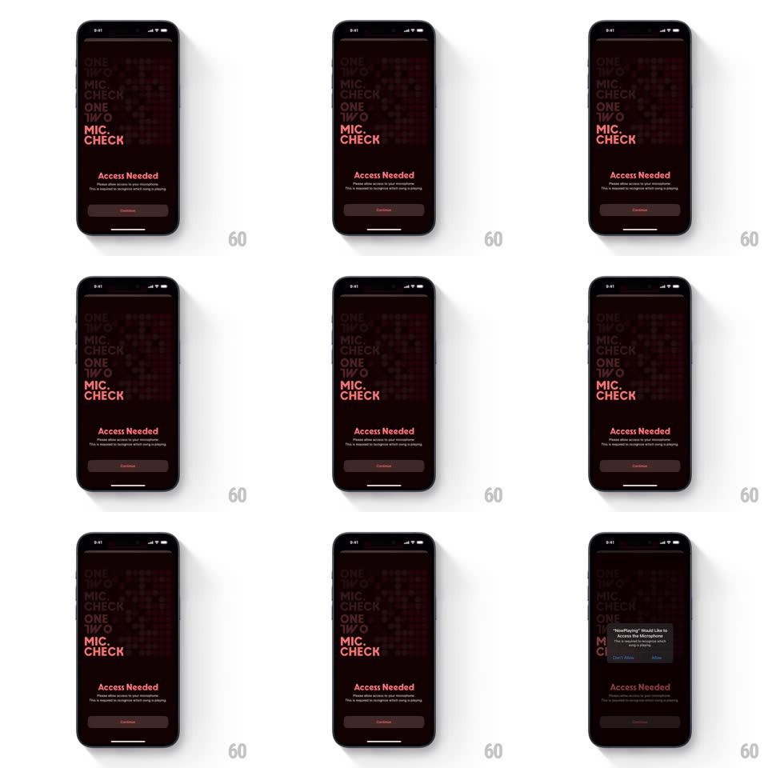

Media
Frame-by-frame

Rebuild this interaction 1:1: NowPlaying's mic-permission ask - a dark "Access Needed" sheet over a repeating "ONE TWO MIC CHECK" typographic wall; tapping Continue triggers the native iOS microphone dialog with a subtle scale-fade.

Rebuild this interaction 1:1: NowPlaying's mic-permission ask - a dark "Access Needed" sheet over a repeating "ONE TWO MIC CHECK" typographic wall; tapping Continue triggers the native iOS microphone dialog with a subtle scale-fade. ## Integration Integration: stack-agnostic spec - springs given as stiffness/damping, timed motions as duration + curve; map every value to your framework and animation library of choice. ## Scene Black screen with a dim red-tinted wallpaper of tiled "ONE TWO MIC CHECK" text blocks; centered content: "Access Needed" in red, two gray lines about microphone access, and a dark pill "Continue" button; the native system dialog appears centered above. ## Motion spec Pattern: pre-permission sheet into native dialog. - Entry: the typographic wall fades in first (300ms) at low opacity; "Access Needed" and the copy rise 14px and fade in staggered (120ms apart); Continue fades up last. - Tap Continue: the button scales down to 0.96 and back (150ms, tactile press), the sheet content eases to ~40% opacity and scales 0.98 (200ms) - a gentle recess - as the native dialog springs in centered (system animation). - The typographic wall drifts very slowly throughout (translate ~6px over 10s) so the backdrop never feels frozen. - After the dialog resolves, the sheet brightens back and hands off to the listening state. ## Calibration - Red is reserved for the headline and the wall's tint - the button stays neutral so the system dialog owns the decision moment. - The recess on tap is small (2%) - a bow, not a collapse. ## Reduced motion Static wall; dialog appears without the recess. ## Don't miss - The wallpaper is text-as-texture: tiled "ONE TWO MIC CHECK" at ~8% opacity, cropped by the screen edges. - Nothing auto-advances; the screen waits indefinitely for the tap.